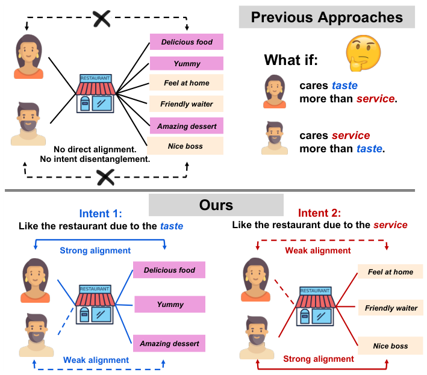
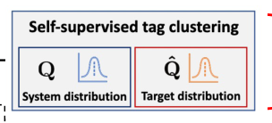

Intent-aware Multi-source Contrastive Alignment for Tag-enhanced Recommendation (面向标签增强推荐的意图感知多源对比对齐)
- 会议/期刊: ICDE 2023
- 作者与机构: Haolun Wu 等；McGill University / Mila、Huawei Noah’s Ark Lab、City University of Hong Kong
- 推荐链路定位: 召回/精排表示增强（模型无关，可插拔）
- 研究方向: 自监督对比学习与交互去噪 / 冷启动与长尾推荐
- 论文原文: 论文原文链接
- 开源代码: 暂未开源（论文引用 CiteULike-t 数据集仓库，非作者方法实现）
TL;DR (1分钟核心速览)
针对标签增强推荐中“用户意图纠缠、GNN 过平滑、高度节点主导”的痛点，IMCAT 把用户/物品嵌入拆成 \(K\) 个意图子向量，用端到端标签聚类把每个子向量对齐到语义标签簇，再以物品为桥构造用户-物品-标签多源 InfoNCE，并用相似物品集合扩展正样本。7 个数据集、3 个 backbone 的 Top-20 排序下，R@20 最高约 +6.7%、NDCG@20 最高约 +10.8%，训练时间较 GNN 基线减少 50% 以上。
Background & Motivation (背景与核心矛盾)
- 主流范式: 现有标签/知识图谱增强推荐多把用户、物品、标签、KG 融成异构图，用 GNN 消息传递注入辅助信息。
- 前人局限: ① 用户-物品只建模单一“interact-with”关系，无法区分“因口味”还是“因服务”点击，意图纠缠且噪声交互会误导；② 对齐时把用户匹配到物品的全部标签，造成过平滑；③ 幂律分布下高度节点在消息传递中影响过大，长尾物品与冷启动用户信号更弱。
- 核心洞察 (Key Insight): 标签可按语义聚成簇，每个簇对应一种用户意图；物品同时连接用户与标签，天然可作为多源对齐的“桥”。
- 本文切入点: 不加深图传播，而以意图感知的多源对比学习把标签信息直接注入 CF 表征。

Method (核心方法设计)
1. 整体框架 (Overall Architecture)
IMCAT 以任意 CF backbone 的用户/物品嵌入为输入：先将 \(u,v\)各拆成\(K\)个意图子向量；用 Student’s t 软分配把标签聚成\(K\) 簇并回传 KL 目标；再以物品为桥，对“交互过该物品的用户意图聚合”与“该物品同一意图簇的标签聚合 + 物品向量”做双向 InfoNCE；最后用共享标签集的相似物品扩展正样本集。训练由 BPR、标签 BPR、对比对齐与聚类 KL 联合优化，推理仍走原 backbone 打分，不引入多层消息传递。
flowchart TD
A["用户-物品交互 + 物品-标签"] --> B["K意图拆分与标签聚类(IRM)"]
B --> C["物品为桥的多源正样本(IMCA)"]
C --> D["相似物品集合到集合正样本(ISA)"]
D --> E["BPR + InfoNCE + KL联合训练"]
E --> F["原backbone Top-N打分"]
2. 关键设计拆解 (Key Designs)
- 意图感知表征与端到端标签聚类 (IRM)：单向量把多种动机混在一起 \(\to\)将\(u_i,v_j\)拆为\(K\)个\(d/K\)子向量，并用带温度\(\eta\)的 Student’s t 分布计算标签\(t_l\)属于第\(k\)簇的概率\(Q_{lk}\)，再用锐化目标\(\hat Q\)做 KL，硬分配取\(\arg\max_k Q_{lk}\)。这样每个意图子空间对应一个语义标签簇，既解耦又避免表征塌缩。
- 物品为桥的多源对比对齐 (IMCA)：用户-标签没有直接边 \(\to\)对物品\(v_j\)，按意图\(k\)聚合交互用户得\(u_j^k\)，聚合其属于第\(k\)簇的标签并经线性层得\(\hat t_j^k\)，令\(z_j^k=\hat t_j^k\oplus v_j^k\)，只在同一\(j\)时作为正对，做双向 InfoNCE，并用\(M_{j,k}\) 按物品-意图相关度重加权。物品同时出现在 CF 与标签侧，因此成为跨源监督的天然锚点。
- 意图感知集合到集合对齐 (ISA)：单物品正样本不足，长尾/冷启动更弱 \(\to\)在意图\(k\)下用 Jaccard 比较两物品的标签集，\(s_{j,j'}^{k}>\delta\)即视为同集，将\(P_j^k\)中多个相似物品都作为正样本，把\(\mathcal{L}_{CA}\)扩展为\(\mathcal{L}_{CA^*}\)。这相当于对交互图做意图级增广，降低高度节点主导，提升低度节点监督密度。
训练目标、负采样与推理效率：总损失为 \(\mathcal{L}=\mathcal{L}_{UV}+\alpha\mathcal{L}_{VT}+\beta\mathcal{L}_{CA^*}+\gamma\mathcal{L}_{KL}\)；BPR 每正样本采 1 个负样本，对比部分把同批其他物品作为候选负样本。推理无多层 GNN 传播，模型无关、可插拔，较 GNN 基线训练更轻。
Experimental Setup & Evaluation Protocol (实验设置与评估协议)
- 数据集与预处理: 显式评分 \(\ge 4\)视为正反馈；过滤交互数\(<10\) 的用户/物品；每个标签至少分配给 5 个物品。
| 数据集 | #Users | #Items | #Tags | #Interactions | 密度/场景 |
|---|---|---|---|---|---|
| HetRec-MV | 2,107 | 3,872 | 2,071 | 471,482 | 5.78%/电影 |
| HetRec-FM | 1,026 | 5,817 | 2,283 | 57,976 | 0.97%/音乐 |
| HetRec-Del | 1,274 | 5,169 | 4,595 | 19,951 | 0.30%/书签 |
| CiteULike | 4,011 | 12,408 | 1,579 | 94,512 | 0.19%/论文 |
| Last.fm-Tag | 18,149 | 14,548 | 6,822 | 582,791 | 0.22%/音乐 |
| AMZBook-Tag | 50,022 | 22,370 | 2,345 | 731,777 | 0.07%/图书 |
| Yelp-Tag | 39,856 | 26,669 | 1,073 | 1,009,922 | 0.10%/商户 |
- 数据划分与防穿越: 用户-物品交互按 \(7:1:2\) 划分为训练/验证/测试；冷启动与长尾为事后分桶分析，不是严格零样本冷启动划分。
- 排名评测协议: 测试阶段做 Top-20 排序，报告 Recall@20 与 NDCG@20；原文未报告采样候选集协议，按测试正样本对物品排序评估。
- 对比基线与超参: 基线覆盖无辅助信息（BPRMF、NeuMF、LightGCN）、标签增强（CFA、DSPR、TGCN）、KG 增强（CKE、RippleNet、KGAT、KGIN）、SSL（SGL、KGCL）。嵌入维度 \(d=64\)，batch=1024，lr/weight decay=\(10^{-3}\)，GNN 均 2 层，5 次运行取均值，paired t-test\(p\le 0.01\)。
Key Experimental Results (实验关键数据)
1. 主实验对比 (Main Results)
下表选取 3 个代表性数据集，保留 8 个主流基线；L-IMCAT 为本文最佳组合（LightGCN backbone）。
| 模型 | CiteULike R@20 / N@20 | AMZBook-Tag R@20 / N@20 | Yelp-Tag R@20 / N@20 |
|---|---|---|---|
| BPRMF | 16.09 / 8.97 | 14.14 / 8.12 | 8.36 / 5.41 |
| LightGCN | 19.14 / 11.91 | 15.89 / 9.27 | 9.37 / 6.19 |
| TGCN | 21.06 / 12.71 | 17.09 / 9.96 | 9.76 / 6.47 |
| KGAT | 20.09 / 12.48 | 16.79 / 9.61 | 9.39 / 6.23 |
| KGIN | 22.03 / 13.08 | 16.81 / 9.63 | 9.97 / 6.67 |
| SGL | 20.74 / 12.59 | 16.92 / 9.88 | 9.85 / 6.53 |
| KGCL | 21.41 / 12.90 | 17.12 / 10.01 | 10.00 / 6.69 |
| L-IMCAT | 22.87 / 13.59 | 17.72 / 10.51 | 10.41 / 6.94 |
| Improv.% vs 最强基线 | +3.8 / +3.9 | +3.5 / +5.0 | +4.1 / +3.7 |
2. 消融实验 (Ablation Study)
以 L-IMCAT 在 CiteULike 与 Yelp-Tag 上移除核心组件：
| 变体 | CiteULike R@20 | CiteULike N@20 | Yelp-Tag R@20 | Yelp-Tag N@20 |
|---|---|---|---|---|
| L-IMCAT 完整 | 22.87 | 13.59 | 10.41 | 6.94 |
| w/o UIT（去多源对齐） | 19.84 | 12.40 | 9.45 | 6.27 |
| w/o UT（仅 U-I 对齐） | 20.04 | 12.45 | 9.76 | 6.41 |
| w/o UI（仅 U-T 对齐） | 21.79 | 13.04 | 9.89 | 6.57 |
| w/o NLT（去非线性变换） | 22.14 | 13.12 | 10.02 | 6.70 |
3. 关键实验发现 (Key Findings)
- 多源对齐是主要增益源：去掉 UIT 后 CiteULike R@20 从 22.87 降到 19.84（-13.2%），Yelp-Tag 从 10.41 降到 9.45（-9.2%）；保留 U-T 比保留 U-I 更好，说明 U-I 已由 BPR 建模，U-T 对比监督更稀缺、更关键。
- 模型无关性明显：NeuMF+IMCAT 在 AMZBook-Tag 上 R@20=17.21、Yelp-Tag=10.04，已接近或超过部分 GNN 基线；L-IMCAT 在 7 个数据集上均优于 KGCL/KGIN 等 SOTA，说明收益不只来自更深图传播。
- 长尾/冷启动与效率兼得：ISA 阈值 \(\delta=0.1/0.3\)会引入伪相似物品而伤害性能，\(\delta=0.7/0.9\)最优；论文报告训练时间较 KGCL 等减少 50%+，且长尾物品与\(<10\) 交互冷启动用户分组表现更优。
Highlights & Limitations (亮点、对比与审稿批判)
- 与代表作对比: TGCN/KGAT/KGIN 依赖异构图消息传递，参数与邻居采样开销大；SGL/KGCL 主要做拓扑增广，未显式建模“物品标签对应哪种用户意图”。IMCAT 把标签簇作为意图语义锚，用对比目标替代深层图传播。
- 可迁移亮点: ① “物品为桥”构造用户-标签正对，可迁移到多模态/知识图谱对齐；② 意图级 Jaccard 集合到集合正样本，可用于冷启动与长尾增广。
- 审稿级局限: ① 需要可用的物品标签，且 \(K\)、\(\delta\)、聚类预训练与更新频率带来超参成本；② 评估采用随机\(7:1:2\) 划分，冷启动为事后分桶而非严格零样本，线上时效性与全库排序延迟仍需验证。
Rating (四维评分)
- 方法创新性 (Novelty): ⭐⭐⭐⭐ （意图解耦 + 标签簇端到端聚类 + 多源集合对齐组合新颖，理论支撑以对比学习与聚类锐化为主）
- 评估协议与实验扎实度 (Protocol & Experiments): ⭐⭐⭐⭐ （7 数据集、3 backbone、5 次运行与显著性检验较完整；但划分偏随机、冷启动非严格零样本）
- 写作与数学规范度 (Clarity & Rigor): ⭐⭐⭐⭐ （InfoNCE、KL、Jaccard 与重加权定义清楚，复杂度分析偏少，K/δ 敏感性有实验补充）
- 工业落地与复现价值 (Industrial & Practical Value): ⭐⭐⭐⭐ （模型无关、无多层 GNN 传播、训练更省时；但标签质量与聚类预训练增加工程成本）